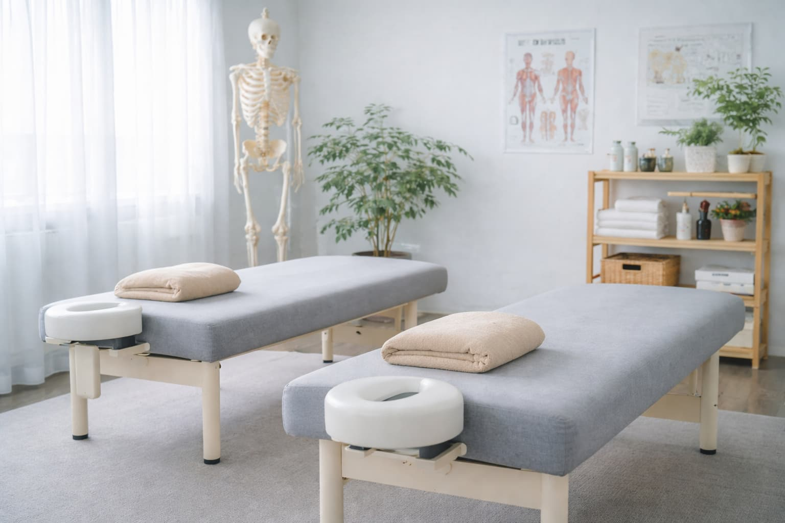
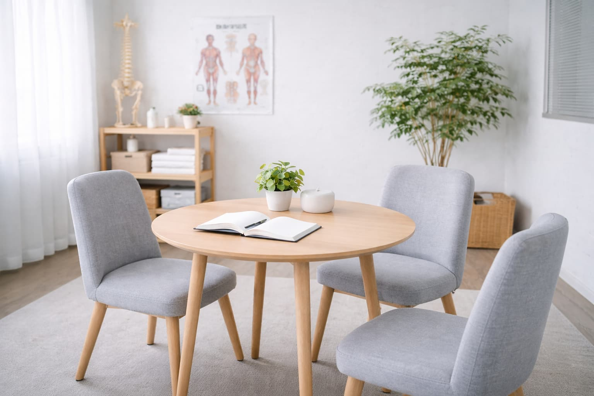
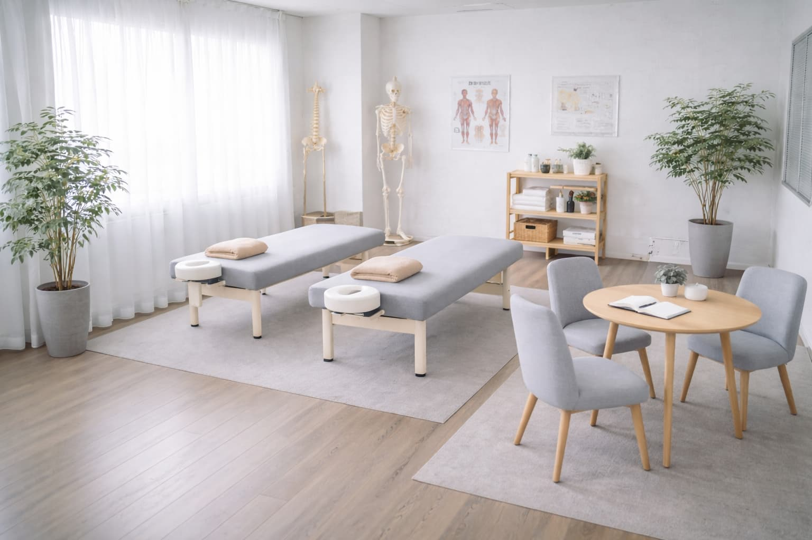

その慢性的な
肩こりや腰痛、
もう我慢しなくていい。
田中整体院では、
身体のバランスや姿勢の歪みを整え、
慢性的な不調の根本改善を目指します。
★★★★★ Google口コミ4.8 / 120件以上
- 完全予約制
- ソフト整体
- 延べ3万人以上の施術実績
※今月は先着10名様限定
こんなお悩み
ありませんか？
慢性的な肩こりや腰痛に
長年悩んでいる
マッサージに通っても
すぐ元に戻ってしまう
デスクワークで姿勢が悪く、
身体の不調を感じる
病院では異常なしと言われたが
痛みが続いている
1つでも当てはまるなら、その不調は
身体のバランスの崩れが
原因かもしれません。
なぜ改善しないのか？
慢性的な肩こりや腰痛が
繰り返してしまうのには、
理由があります。
一般的な対処
- 痛い部分だけをマッサージする
- その場しのぎの対処になる
- 根本原因まで分析しない
田中整体院の整体
- 姿勢や身体バランスを徹底分析
- 痛みの本当の原因にアプローチ
- 再発しにくい身体づくりをサポート
田中整体院の施術法
バキバキしないソフト整体
田中整体院では、強い刺激を与える施術ではなく
身体のバランスを整える優しい整体を
行っています。
初めての方でも安心して受けていただける施術です。
- 姿勢・身体バランスを丁寧にチェック
- 骨盤・背骨の歪みを調整
- 再発しにくい身体づくりをサポート
カウンセリング
お身体の悩みや生活習慣を
丁寧にお伺いします。
姿勢チェック
姿勢や身体のバランス、
可動域を確認します。
原因分析
痛みの根本原因を分析し、
施術方針を決定します。
整体施術
身体に負担の少ないソフト
整体でバランスを整えます。
アフターケア
再発防止のための姿勢や
生活習慣のアドバイスを
行います。
改善事例
実際に田中整体院で施術を受けられた方の
改善事例をご紹介します。
40代女性｜慢性的な腰痛
長年腰痛に悩んでおり、
朝起きるのも辛い状態でした。
数回の施術で腰の痛みが軽減し、
日常生活がとても楽になりました。
30代男性｜肩こり・頭痛
デスクワークで肩こりがひどく、
頭痛も頻繁に起きていました。
施術後は肩が軽くなり、
頭痛もほとんど起きなくなりました。
田中整体院が
選ばれる理由
丁寧なカウンセリングと原因分析
痛みのある部分だけではなく、姿勢や身体のバランスまで
丁寧に確認します。
不調の本当の原因を見つけたうえで施術を行います。
身体に負担の少ないソフト整体
強い刺激を与える施術ではなく、
身体のバランスを整える優しい整体を行います。
整体が初めての方でも安心して受けていただけます。
再発しにくい身体づくりをサポート
その場しのぎの施術では終わりません。
日常生活の姿勢や身体の使い方までアドバイスし、
再発しにくい身体づくりをサポートします。
院長プロフィール
院長：田中 健一
整体業界に携わり15年以上、これまで多くの方の
肩こりや腰痛などの慢性的なお悩みに
向き合ってきました。
痛みのある部分だけではなく、姿勢や身体バランスなどの根本原因を見つけることを
大切にしています。
「ここに来て良かった」と感じていただけるよう、一人ひとりのお身体と丁寧に向き合いながら施術を行っています。
院内紹介
田中整体院では、リラックスして施術を
受けていただけるよう
清潔で落ち着いた空間づくりを
心がけています。

施術スペース

カウンセリングスペース

待合スペース
料金案内
初めての方でも安心してご利用いただけるよう、
初回限定の特別価格をご用意しています。
整体施術
通常 6,600円 3,980円
※今月は先着10名様限定
（カウンセリング＋施術 約60分）
初回3,980円で予約する- ※表示価格はすべて税込です
- ※無理な回数券販売は行っていません
- ※完全予約制です
よくある質問
田中整体院では、強くボキボキ鳴らすような施術は行っていません。
身体のバランスを整えるソフト整体のため、初めての方でも安心して受けていただけます。
お身体の状態によって個人差があります。
初回のカウンセリングと検査で状態を確認し、最適な通院ペースをご提案いたします。
動きやすい服装でお越しください。
お着替えをご用意している場合もありますので、詳しくはご予約時にご確認ください。
空きがあれば当日予約も可能です。
ただし予約が埋まりやすいため、事前のご予約をおすすめしています。
その不調、
我慢し続けていませんか？
慢性的な肩こりや腰痛は、放っておくと
さらに悪化することもあります。
まずは一度、
お身体の状態を確認してみませんか？
お問い合わせ
フォーム（デモ）
※こちらはテンプレートの表示サンプルです。
実際には送信されません。
施術内容や料金についてのご質問など、
どんな小さなことでもお気軽に
ご相談ください。